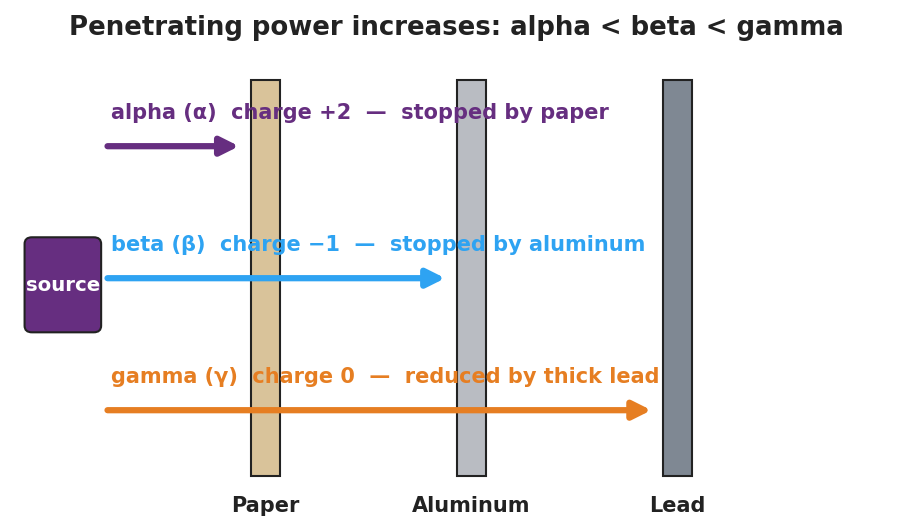
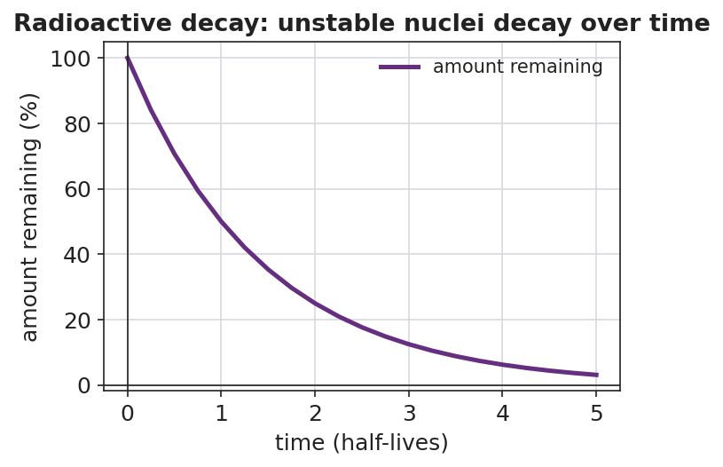

01 Phenomenon
In 1896 Henri Becquerel left a chunk of uranium rock in a dark, closed drawer, resting on top of wrapped photographic film. Days later the film was fogged — exposed — even though no light ever reached it. Nobody heated the rock, struck it, or shone light on it. Something came out of the uranium atoms on its own. In a cloud chamber, you can even see thin white streaks appear out of empty air: the tracks of invisible particles shooting out of unstable atoms, second after second, with nothing triggering them.
02 Driving question
Why are some atoms unstable and "decay" on their own — and what comes out when they do?
03 Notice & wonder
| I notice… | I wonder… |
|---|---|
Turn & Talk #1: In the cloud chamber you saw at least two kinds of track — short and thick, and long and thin. In one sentence, what might make one particle leave a short, fat track and another leave a long, thin track? Think about mass and charge.
04 Initial model
Before your teacher names anything: a uranium-238 nucleus has 92 protons. Suppose a particle made of 2 protons and 2 neutrons leaves the nucleus.
Draw the “before” and “after” nucleus. Label the number of protons in each.
| Before decay | After decay | |
|---|---|---|
| Number of protons | ||
| Did the element change? (yes/no) | — |
After the particle leaves, how many protons remain? _______________
Use the Periodic Table: which element has that many protons? _______________
Conservation check — does the total add up? Protons in the daughter ( ___ ) + protons in the particle that left ( ___ ) = ___ . Does this equal the original 92? _______________
05 Investigate
Part 1 — ABCs: Rank the radiation by what stops it (before you name it)
Three different invisible rays come from the source. Without naming them yet, use the penetrating-power model and the count-rate data table to rank them.

Count-rate data (counts per minute reaching the detector):
| Shield between source and detector | Ray 1 | Ray 2 | Ray 3 |
|---|---|---|---|
| No shield | 500 | 500 | 500 |
| Sheet of paper | 0 | 480 | 495 |
| 3 mm aluminum | 0 | 5 | 470 |
| 5 cm lead | 0 | 0 | 90 |
- Rank the rays from least penetrating (1) to most penetrating (3):
| Ray | What stops it | My rank (1 = least, 3 = most penetrating) |
|---|---|---|
| Ray 1 | ||
| Ray 2 | ||
| Ray 3 |
Which ray gets through even 5 cm of lead (just reduced, not stopped)? _______________
Predict: a more penetrating ray probably carries (more / less) mass and charge. Circle one and explain in a few words: _______________________________________________
Part 2 — Build and balance decay equations
Use this notation (from Reference Table O). The top number is the mass number (A); the bottom number is the charge / atomic number (Z).
- alpha particle: ⁴₂He (mass 4, charge +2)
- beta particle (electron): ⁰₋₁e (mass ≈ 0, charge −1)
- positron (beta-plus): ⁰₊₁e (mass ≈ 0, charge +1)
- gamma ray: ⁰₀γ (mass 0, charge 0)
Fill in the missing daughter nuclide so that the top numbers balance and the bottom numbers balance across the arrow. Use the Periodic Table to name the daughter element.
A — Alpha decay of uranium-238
²³⁸₉₂U → ____________ + ⁴₂He
- Daughter mass number: 238 − 4 = ____
- Daughter atomic number: 92 − 2 = ____ → element: ____________
- Balance check: top ____ + 4 = 238? ____ bottom ____ + 2 = 92? ____
B — Beta-minus decay of carbon-14 (a neutron becomes a proton + an emitted electron)
¹⁴₆C → ____________ + ⁰₋₁e
- Daughter mass number: 14 − 0 = ____
- Daughter atomic number: 6 − (−1) = ____ → element: ____________
- Did the atomic number go up or down? ____________
C — Positron decay of sodium-22 (a proton becomes a neutron + an emitted positron)
²²₁₁Na → ____________ + ⁰₊₁e
- Daughter mass number: 22 − 0 = ____
- Daughter atomic number: 11 − (+1) = ____ → element: ____________
- Did the atomic number go up or down? ____________
06 Make it make sense
For each item, complete the equation and answer the question. These are the same three decays you worked in the Investigation — confirm your work here.
1. Alpha decay of uranium-238. Write the complete balanced equation and name the emitted particle.
²³⁸₉₂U → ____________ + ____________
- Emitted particle name: ____________
- Daughter element: ____________
2. Beta-minus decay of carbon-14. Complete the equation and explain, in one sentence, why the atomic number rose even though a negative electron left the nucleus.
¹⁴₆C → ____________ + ____________
Explanation: _______________________________________________
3. Positron decay of sodium-22. Complete the equation and state how the daughter’s atomic number compares to the parent’s.
²²₁₁Na → ____________ + ____________
The atomic number went from 11 to ____, because _______________________________________________
07 Key vocabulary
- radioactive decay
- the spontaneous breakdown of an unstable atomic nucleus into a more stable one, releasing a particle (alpha, beta, or positron) and/or energy (gamma); it happens on its own, with no outside trigger, and conserves both mass number and atomic number across the decay
- nuclear radiation
- the particles and energy emitted during radioactive decay: alpha (⁴₂He, +2 charge, stopped by paper), beta (⁰₋₁e electron or ⁰₊₁e positron, ±1 charge, stopped by aluminum), and gamma (⁰₀γ, no charge or mass, only reduced by thick lead); penetrating power increases from alpha to beta to gamma
- parent and daughter nuclide
- the parent is the original unstable nuclide that decays; the daughter is the nuclide produced; the daughter is a different element whenever the proton number changes (alpha, beta, positron) but the same element when only gamma is emitted
Use each term in a sentence about today’s investigation. Do not copy the definition — describe something you actually did or observed.
radioactive decay: _______________________________________________ _______________________________________________
nuclear radiation: _______________________________________________ _______________________________________________
parent / daughter nuclide: _______________________________________________ _______________________________________________
08 Revise your model
Return to your Initial Model (the uranium-238 before/after nucleus). Add vocabulary labels:
Label the original nucleus parent and the new nucleus daughter.
Label the particle that left and write its symbol: ____________
Draw a box around your conservation check and label it “mass and charge conserved.”
Use the decay-curve figure to answer (d):

- Each decay event removes one parent nucleus from the sample. According to the curve, does the amount of parent ever reach exactly zero? _______________
Then finish this Because / But / So sentence:
A uranium-238 nucleus becomes thorium-234 because __________________________________________, but __________________________________________, so __________________________________________.
09 Exit ticket
(a) In the equation ²²⁶₈₈Ra → ²²²₈₆Rn + ____, identify the emitted particle by name and write its nuclear symbol (with mass number and charge).
Particle name: ____________ Symbol: ____________
(b) Balance this equation by filling in the missing daughter nuclide, then name the daughter element.
⁴⁰₁₉K → ____________ + ⁰₋₁e
Daughter element: ____________
(c) In one sentence, explain why an alpha particle is stopped by a sheet of paper while a gamma ray passes through it.
10 Explore further
- Cloud chamber demo or video (ACTIVE LEARNING anchor): Show a diffusion cloud-chamber clip (e.g., a CERN or university cloud-chamber video) or run a dry-ice cloud chamber if available. Students do a structured Notice & Wonder on the tracks: short/thick vs. long/thin vs. faint. No external URL is required; any cloud-chamber clip from the school media library works. Connect the track types to the particle types named later in Phase 3.
- Paper-shielding investigation for radiation types: Using the penetrating-power model in `figures/penetrating_power.png` as the guide, students sort three radiation types by what stops them — a sheet of paper (alpha), a few millimeters of aluminum (beta), or thick lead/concrete (gamma). If check-source equipment and a survey meter are available, run the hands-on version (paper → aluminum → lead between source and detector, recording counts). If not, students reason from the model and a provided count-rate data table. Safety: any real sources must be sealed, school-approved check sources handled only by the teacher per district protocol.
- Decay-equation card sort (ACTIVE LEARNING): Students physically build balanced nuclear equations from cards (parent nuclide, emitted particle, daughter nuclide) and check that mass number and atomic number balance on both sides. Connect the daughter back to `figures/decay_curve.png`: each decay event removes one parent nucleus from the population.